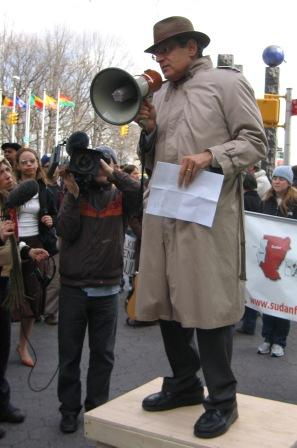

2010-10-21 08:00

The Forward listed Charles Jacobs as one of America’s Top 50 Jewish leaders in 2007. Apparently they were looking more at the range of his activism and less at what mischief he was actually up to.
Jacobs has been a founder of Committee for Accuracy in Middle East Reporting in America, the American Anti-Slavery Group, and the David Project, a member of the Foundation for Defense of Democracies, and has now created the oxymoronically named Americans for Peace and Tolerance. Jacobs has taken Abe Foxman to task for being too soft on Muslims.
Long before the Park51 project made news, Charles Jacobs spearheaded opposition to an Islamic Center in Roxbury and slammed governor Deval Patrick and Boston mayor Thomas Menino for supporting the project and meeting with Muslim community leaders. Despite widespread repudiation Jacobs continues to maintain that the Roxbury center is linked to global terror plots. He has also leveled personal attacks in the Jewish Advocate on fellow Jews who extended hands of friendship to the Muslim community, notably Rabbi Eric Gurvis. In June seventy Boston area rabbis signed a petition supporting Gurvis and denounced Jacobs’ smears.
In a FrontPage Mag interview Jacobs describes how he – and Israel’s Ministry of Foreign Affairs – views Islam as nothing more than a rulebook for terrorists:
Two years ago I attended a three day conference in Jerusalem on Global Anti-Semitism sponsored by Israel ’s Ministry of Foreign Affairs. Senior leaders of American Jewry were present. We all heard how Islamic anti-Semitism - theologically based, was spread with Saudi funding to mosques and madrassas throughout the Islamic world, instructing tens if not hundreds of millions of people that Jews were the sons of monkeys and pigs and that to kill us is a holy deed.
Jacobs is a regular contributor to Andrew Breitbart’s Big Peace blog and to David Horowitz’s Frontpage Mag. His “Clash of Civiliations” worldview meshes with pro-Israel advocacy and neoconservatism.
In July of this year Jacobs participated in a panel discussion in Aspen, Colorado, entitled “Conscience and Conflict,” featuring fellow neocons John Bolton, Phillis Chesler and Caroline Glick, at which he bemoaned Europeans as “neopagans” and “socialists,” decried mosques as “victory markers,” and stated “there is no moderate Muslim doctrine.”
Recently Jacobs made a big stink over a visit of students from the Wellseley public schools to an area mosque as part of multicultural education. In an article entitled “Propaganda is not Education,” Jacobs wrote:
Those who care about “religious ignorance and conflict over belief systems” should care about the radicalization of the historically moderate American Muslim community and the unwitting embrace of radical Muslims by our political and civic leaders.
Not only are Jacobs’ enemies all of the world’s Muslims, the press, Europeans, the United Nations, non-governmental aid agencies, liberals, and academics – but now even political and civil leaders have let him down too.
This was published in Loonwatch on October 26, 2010
http://www.loonwatch.com/2010/10/charles-jacobs-americans-for-hate-and-intolerance/